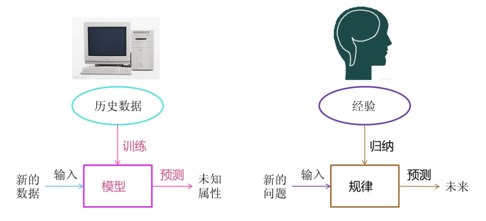
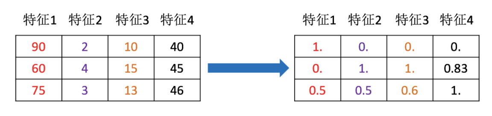

机器学习工作流程
1 什么是机器学习
机器学习是从数据中自动分析获得模型，并利用模型对未知数据进行预测。

2 机器学习工作流程


- 机器学习工作流程总结
- 1.获取数据
- 2.数据基本处理
- 3.特征工程
- 4.机器学习(模型训练)
- 5.模型评估
2.1获取到的数据集介绍


数据简介
在数据集中一般：
- 一行数据我们称为一个样本
- 一列数据我们成为一个特征
- 有些数据有目标值（标签值），有些数据没有目标值（如上表中，电影类型就是这个数据集的目标值）
数据类型构成：
- 数据类型一：特征值+目标值（目标值是连续的和离散的）
- 数据类型二：只有特征值，没有目标值
数据分割：
- 机器学习一般的数据集会划分为两个部分：
- 训练数据：用于训练，构建模型
- 测试数据：在模型检验时使用，用于评估模型是否有效
- 划分比例：
- 训练集：70% 80% 75%
- 测试集：30% 20% 25%
- 机器学习一般的数据集会划分为两个部分：
2.2 数据基本处理
即对数进行缺失值、去除异常值等处理
2.3 特征工程
2.3.1 什么是特征工程
特征工程是使用专业背景知识和技巧处理数据，使得特征能在机器学习算法上发挥更好的作用的过程。
- 意义：会直接影响机器学习的效果
2.3.2 为什么需要特征工程(Feature Engineering)
机器学习领域的大神Andrew Ng(吴恩达)老师说“Coming up with features is difficult, time-consuming, requires expert knowledge. “Applied machine learning” is basically feature engineering. ”
注：业界广泛流传：数据和特征决定了机器学习的上限，而模型和算法只是逼近这个上限而已。
2.3.3 特征工程包含内容
- 特征提取
- 特征预处理
- 特征降维
1） 特征提取
特征提取：将任意数据（如文本或图像）转换为可用于机器学习的数字特征

2） 特征预处理
特征预处理：通过一些转换函数将特征数据转换成更加适合算法模型的特征数据过程

3）特征降维
特征降维：指在某些限定条件下，降低随机变量(特征)个数，得到一组“不相关”主变量的过程

2.4 机器学习
选择合适的算法对模型进行训练（具体内容见1.5）
2.5 模型评估
对训练好的模型进行评估（具体内容见1.6）
完整机器学习项目的流程（拓展阅读）
1 抽象成数学问题
明确问题是进行机器学习的第一步。机器学习的训练过程通常都是一件非常耗时的事情，胡乱尝试时间成本是非常高的。
这里的抽象成数学问题，指的明确我们可以获得什么样的数据，抽象出的问题，是一个分类还是回归或者是聚类的问题。
2 获取数据
数据决定了机器学习结果的上限，而算法只是尽可能逼近这个上限。
数据要有代表性，否则必然会过拟合。
而且对于分类问题，数据偏斜不能过于严重，不同类别的数据数量不要有数量级的差距。
而且还要对数据的量级有一个评估，多少个样本，多少个特征，可以估算出其对内存的消耗程度，判断训练过程中内存是否能够放得下。如果放不下就得考虑改进算法或者使用一些降维的技巧了。如果数据量实在太大，那就要考虑分布式了。
3 特征预处理与特征选择
良好的数据要能够提取出良好的特征才能真正发挥作用。
特征预处理、数据清洗是很关键的步骤，往往能够使得算法的效果和性能得到显著提高。归一化、离散化、因子化、缺失值处理、去除共线性等，数据挖掘过程中很多时间就花在它们上面。这些工作简单可复制，收益稳定可预期，是机器学习的基础必备步骤。
筛选出显著特征、摒弃非显著特征，需要机器学习工程师反复理解业务。这对很多结果有决定性的影响。特征选择好了，非常简单的算法也能得出良好、稳定的结果。这需要运用特征有效性分析的相关技术，如相关系数、卡方检验、平均互信息、条件熵、后验概率、逻辑回归权重等方法。
4 训练模型与调优
直到这一步才用到我们上面说的算法进行训练。现在很多算法都能够封装成黑盒供人使用。但是真正考验水平的是调整这些算法的（超）参数，使得结果变得更加优良。这需要我们对算法的原理有深入的理解。理解越深入，就越能发现问题的症结，提出良好的调优方案。
5 模型诊断
如何确定模型调优的方向与思路呢？这就需要对模型进行诊断的技术。
过拟合、欠拟合 判断是模型诊断中至关重要的一步。常见的方法如交叉验证，绘制学习曲线等。过拟合的基本调优思路是增加数据量，降低模型复杂度。欠拟合的基本调优思路是提高特征数量和质量，增加模型复杂度。
误差分析 也是机器学习至关重要的步骤。通过观察误差样本全面分析产生误差的原因:是参数的问题还是算法选择的问题，是特征的问题还是数据本身的问题……
诊断后的模型需要进行调优，调优后的新模型需要重新进行诊断，这是一个反复迭代不断逼近的过程，需要不断地尝试， 进而达到最优状态。
6 模型融合
一般来说，模型融合后都能使得效果有一定提升。而且效果很好。
工程上，主要提升算法准确度的方法是分别在模型的前端（特征清洗和预处理，不同的采样模式）与后端（模型融合）上下功夫。因为他们比较标准可复制，效果比较稳定。而直接调参的工作不会很多，毕竟大量数据训练起来太慢了，而且效果难以保证。
7 上线运行
这一部分内容主要跟工程实现的相关性比较大。工程上是结果导向，模型在线上运行的效果直接决定模型的成败。 不单纯包括其准确程度、误差等情况，还包括其运行的速度(时间复杂度)、资源消耗程度（空间复杂度）、稳定性是否可接受。
这些工作流程主要是工程实践上总结出的一些经验。并不是每个项目都包含完整的一个流程。这里的部分只是一个指导性的说明，只有大家自己多实践，多积累项目经验，才会有自己更深刻的认识。